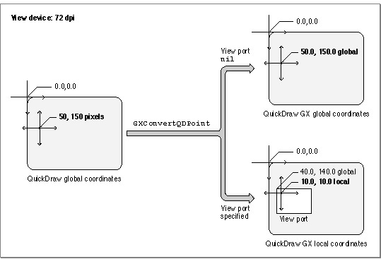

Legacy Document
Important: The information in this document is obsolete and should not be used for new development.
Important: The information in this document is obsolete and should not be used for new development.


Using the Macintosh Interface Functions
The QuickDraw GX Macintosh interface functions allow you to integrate QuickDraw GX with the Macintosh Toolbox. These functions allow you to
- create and use view ports associated with Macintosh windows
- retrieve a QuickDraw graphics device associated with a QuickDraw GX view device.
- convert between QuickDraw and QuickDraw GX coordinate systems
- intercept QuickDraw GX drawing functions for a view port
Creating and Using View Ports with Macintosh Windows
QuickDraw GX drawing takes place in view ports. You can associate a view port with a window in order to clip drawing to the window's visible region. Once you've created a window, you can create a view port that is associated with that window by the use of theGXNewWindowViewPortfunction. When you attach a view port to a window, you guarantee that all the shapes that you draw to the view port will be drawn in the correct location within the window, even when the window is moved. You also guarantee that if the window is underneath others that the QuickDraw GX drawing will be clipped to the QuickDraw GX window's visible region. You can attach a view port to your window with the call
windowParentViewPort = GXNewWindowViewPort(theWindow);The resultingwindowParentViewPortcontains the view port attached to the window. You cannot change either the mapping or the clip of the window view port. If you need to do either--for example, if you need to control position within the view port (as when scrolling) or clip drawing within the window (so you don't draw over scroll bars), you need to create a child view port of your window view port and draw only to it. Child view ports, view port hierarchies, and how to use them are described in detail in the chapter "View-Related Objects" in Inside Macintosh: QuickDraw GX Objects.Once you've created a view port, you can determine the view port that is associated with a specific window by using the
GXGetWindowViewPortfunction. If you haven't associated a view port to that window, the function returnsnil.You can find out which window is associated with a view port by using the
GXGetViewPortWindowfunction. The function returnsnilif the view port is not associated with any window.The GXNewWindowViewPort function is described on page 1-24. The
GXGetWindowViewPortfunction is described on page 1-26. TheGXGetViewPortWindowfunction is described on page 1-25.Using View Devices With Graphics Devices
On the Macintosh, every monitor gets a graphics device, described by aGDevicerecord. So when QuickDraw GX creates a screen view device for each monitor, there is already a graphics device for it. TheGXGetViewDeviceGDeviceandGXGetGDeviceViewDevicefunctions link the two worlds together, so that you can work with either description of a display device.These functions work only with Macintosh system graphics devices. If you have a screen view device, you can call the
GXGetViewDeviceGDevicefunction to get the graphics device that corresponds to that view device. If you create your own offscreen view device, it will not have an associated graphics device. Likewise, there is no view device associated with an offscreenGDevicerecord.The
GXGetViewDeviceGDevicefunction is described on page 1-27; theGXGetGDeviceViewDevicefunction is described on page 1-28.Converting From QuickDraw to QuickDraw GX Coordinates
QuickDraw GX provides several functions that involve conversion of locations on the QuickDraw coordinate plane into locations expressed in QuickDraw GX local or global coordinates.Converting from QuickDraw Global to QuickDraw GX Local or Global Coordinates
You can use theGXConvertQDPointfunction to convert a point having QuickDraw global coordinates to either QuickDraw GX global or QuickDraw GX local coordinates. If a view port is specified in the function's parameters, the QuickDraw point coordinates are converted to the corresponding QuickDraw GX local coordinates. If the view port parameter isnil, the QuickDraw point coordinates are converted to corresponding QuickDraw GX global coordinates. Figure 1-1 shows how theGXConvertQDPointfunction converts a point having QuickDraw global coordinates of (50, 150) pixels on a monitor to QuickDraw GX coordinates in points (in which 1 point equals 1/72 inch).Figure 1-1 Converting from QuickDraw global to QuickDraw GX local and global coordinates

When the view port parameter is
nil, the QuickDraw global coordinates are converted to QuickDraw GX global coordinates (50.0, 150.0). When the view port is specified, the QuickDraw global coordinates are converted to QuickDraw local coordinates (10.0, 10.0) when the view port is located at QuickDraw GX global coordinates (40.0, 140.0). The local coordinates are local relative to the specified view port.The
GXConvertQDPointfunction is described on page 1-29. For additional information about QuickDraw GX local, global, and device space, see the chapter "View-Related Objects" in Inside Macintosh: QuickDraw GX Objects.Obtaining Mouse Location in Global Coordinates
TheGXGetGlobalMousefunction returns the location of the Macintosh cursor (mouse) in QuickDraw GX global coordinates. If a QuickDraw GX view device has a resolution of 72 dpi and a cursor is located at point (500, 150) pixels in QuickDraw coordinates, theGXGetGlobalMousefunction would return the QuickDraw GX coordinates (500.0, 150.0) in points. If the resolution of the QuickDraw GX view device is 144 dpi and the cursor were at (1000, 300) pixels, theGXGetGlobalMousefunction would again return coordinates (500.0, 150.0). No matter what the resolution of the device, the QuickDraw GX global coordinates are the same for a cursor located at a given absolute position.The
GXGetGlobalMousefunction is described on page 1-30. For additional information about local, global, and device spaces, see the chapter "View-Related Objects" in Inside Macintosh: QuickDraw GX Objects.Obtaining Mouse Location in Local Coordinates
For a given view port, you can use theGXGetViewPortMousefunction to obtain the mouse position in the coordinate system (local coordinates) of that view port. This function takes any scaling of local space into account; if, for example, you have a zoomed-in view, the coordinates would be relative to the zoomed coordinate system.If you obtain the mouse point in QuickDraw global coordinates, you can take the result of the
GXGetViewPortMousefunction and immediately turn it into a shape. You can use theGXNewShapefunction with the returned point as the shape origin, and QuickDraw GX will draw the shape at the point where the mouse is located with the correct scale. If the scale factor is 10, the shape is drawn enlarged by a factor of 10.The
GXGetViewPortMousefunction is described on page 1-30. For additional information about local, global, and device spaces, see the chapter "View-Related Objects" in Inside Macintosh: QuickDraw GX Objects.Intercepting Drawing Calls to a View Port
TheGXSetViewPortFilterfunction causes QuickDraw GX to intercept all drawing function calls to a specified view port and pass them instead to an application-defined callback function that you supply. You can use the filter function to perform actions other than screen drawing, or perhaps to collect information about them.QuickDraw GX uses this function to install a view port filter for printing. When a page is open and a call is made to draw a shape, instead of actually drawing it to the screen, the printing view port filter records (spools) it to the print file. You can use this kind of function if you want to achieve a similar result or if you otherwise want to manipulate shapes that would be drawn to a view port.
When you use the
GXGetViewPortFilterfunction, you get back what you set with theGXSetViewPortFilterfunction. If you want to get rid of your view port filter, use theGXSetViewPortFilterfunction and specify anilfilter function.The
GXSetViewPortFilterfunction is described on page 1-31. TheGXGetViewPortFilterfunction is described on page 1-32. The application-defined callback filter function is described on page 1-40.